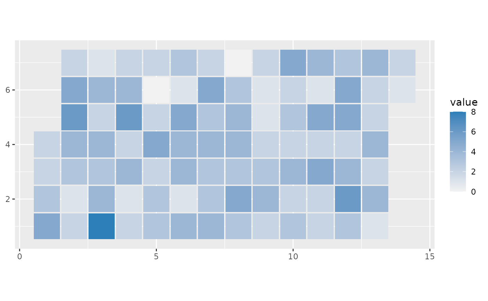

geom_calendar() draws one tile per day and computes calendar positions from
the input data. Users only need to map date and value; week/day placement
is handled internally.
Usage
geom_calendar(
mapping = NULL,
data = NULL,
...,
week_start = "sunday",
start_date = NULL,
end_date = NULL,
na_value = 0,
cell_width = 0.95,
cell_height = 0.95,
square = TRUE,
color = NA,
linewidth = 0,
na.rm = FALSE,
show.legend = NA,
inherit.aes = TRUE
)Arguments
- mapping
Set of aesthetic mappings created by
ggplot2::aes(). Must includedateandvalue.- data
A data frame.
- ...
Additional parameters passed on to
ggplot2::layer().- week_start
First day of week. One of
"sunday","monday",0, or1.- start_date
Optional lower date bound for the displayed range.
- end_date
Optional upper date bound for the displayed range.
- na_value
Value assigned to dates that are missing from input data.
- cell_width
Width of each day tile.
- cell_height
Height of each day tile.
- square
If
TRUE, addsggplot2::coord_fixed()(ratio = 1) so day cells render as squares by default.- color
Tile border color.
- linewidth
Tile border line width.
- na.rm
Passed to
ggplot2::geom_tile()to control NA handling.- show.legend
Should this layer be included in legends?
- inherit.aes
If
FALSE, overrides global aesthetics.
Value
A ggplot2 component. By default this includes the calendar layer plus
ggplot2::coord_fixed() so day tiles stay square.
Examples
library(ggplot2)
set.seed(1)
daily <- data.frame(
date = seq.Date(as.Date("2025-01-01"), as.Date("2025-03-31"), by = "day"),
value = rpois(90, lambda = 3)
)
ggplot(daily, aes(date = date, value = value)) +
geom_calendar() +
scale_fill_gradient(low = "grey95", high = "#2C7FB8")

signed_values <- data.frame(
date = seq.Date(as.Date("2025-01-01"), as.Date("2025-02-28"), by = "day"),
value = rnorm(59, mean = 0, sd = 2)
)
ggplot(signed_values, aes(date = date, value = value)) +
geom_calendar() +
scale_fill_gradient2(
low = "#B2182B",
mid = "white",
high = "#2166AC"
)